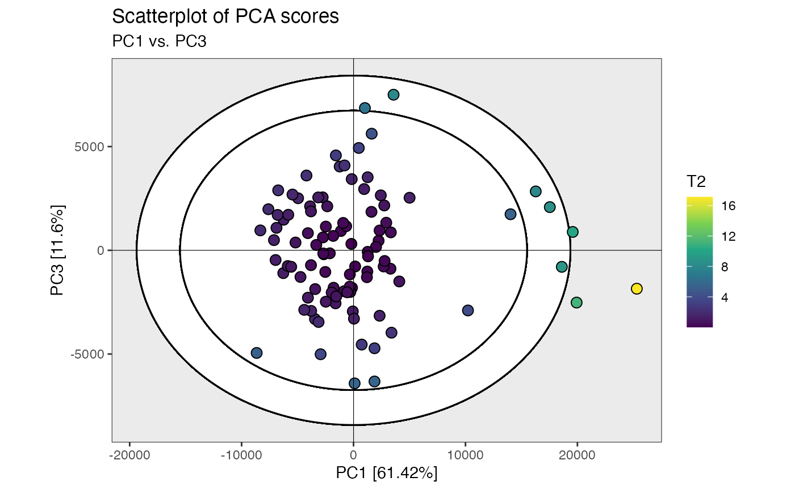
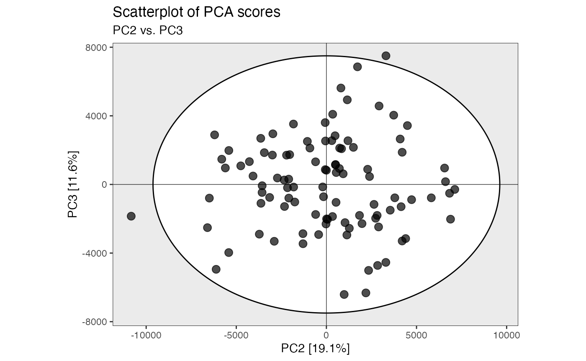

This package is specifically designed to help draw Hotelling’s T-squared ellipses on PCA or PLS score scatterplots, a crucial tool in chemometrics for multivariate data analysis and quality control. In the field of chemometrics, these ellipses serve as powerful visual aids for measurements assessment, outlier detection, and process monitoring. By superimposing Hotelling’s T-squared ellipses onto score plots, analysts can quickly identify abnormal samples and establish well-defined confidence regions for normal process operations.
The package’s functionality enables computing the Hotelling’s T-squared statistic, the semi-minor and semi-major axes of the Hotelling’s T-squared ellipse, and generates the coordinate points necessary for constructing a confidence ellipse. Specifically, the package provides two primary functions:
ellipseParam(), is used to calculate the Hotelling’s
T-squared statistic and the semi-axes of the confidence ellipses at 99%
and 95% confidence intervals.
ellipseCoord(), is primarily used to get the
x, y, and z coordinates for plotting 2D or 3D
confidence ellipses at user-defined confidence interval. The confidence
interval is set at 95% by default.
In this example, we use FactoMineR::PCA() to perform the
Principal Component Analysis (PCA) on a LIBS spectral dataset
specData, and extract the PCA scores.
set.seed(002)
pca_mod <- specData %>%
select(where(is.numeric)) %>%
PCA(scale.unit = FALSE, graph = FALSE)
pca_scores <- pca_mod %>%
pluck("ind", "coord") %>%
as_tibble() %>%
print()
#> # A tibble: 100 × 5
#> Dim.1 Dim.2 Dim.3 Dim.4 Dim.5
#> <dbl> <dbl> <dbl> <dbl> <dbl>
#> 1 25306. -10831. -1851. -83.4 -560.
#> 2 -67.3 1137. -2946. 2495. -568.
#> 3 -1822. -22.0 -2305. 1640. -409.
#> 4 -1238. 3734. 4039. -2428. 379.
#> 5 3299. 4727. -888. -1089. 262.
#> 6 5006. -49.5 2534. 1917. -970.
#> 7 -8325. -5607. 960. -3361. 103.
#> 8 -4955. -1056. 2510. -397. -354.
#> 9 -1610. 1271. -2556. 2268. -760.
#> 10 19582. 2289. 886. -843. 1483.
#> # ℹ 90 more rowsThe Hotelling’s T-squared statistic can be computed using the
ellipseParam function in two distinct ways. (1) By
specifying the parameter k: This represents the number of
principal components to retain. (2) By setting the
threshold parameter: This defines the cumulative explained
variance to determine the number of components.
The function also returns the 95% and 99% cutoffs
(cutoff.95pct and cutoff.99pct), on the same
scale as the T-squared values. By default (method = "f"),
they are based on the F distribution, as in previous versions of the
package. Setting method = "beta" uses the exact
distribution of T-squared for the observations used to build the model
(e.g. the PCA scores themselves), which is less conservative for small
sample sizes.
The confidence levels are set with conf.limit (default
c(0.95, 0.99)). Any number of levels can be given, and the
cutoffs are named after them:
res <- ellipseParam(pca_scores, k = 3, conf.limit = c(0.975, 0.999))
res$cutoff.97.5pct
#> [1] 9.962844
res$cutoff.99.9pct
#> [1] 17.97598
T2 <- ellipseParam(pca_scores, k = 3)$Tsquare$value
T2
#> [1] 26.9359912 1.3035681 0.8181310 3.4524888 2.2601156 1.5363946
#> [7] 4.5589523 1.5997599 1.1021269 10.5176373 6.7530504 0.4490389
#> [13] 3.7666788 3.3125399 0.1961058 2.5214647 12.6176330 0.5787373
#> [19] 2.2944640 5.5476646 3.1043351 1.1121461 0.5572901 3.6615960
#> [25] 2.5225895 1.8064956 5.0332286 4.1342302 0.1235691 3.2825330
#> [31] 4.1423800 2.7338459 1.7932333 1.5642370 1.0274836 1.0815384
#> [37] 8.4494300 2.2507997 1.2889658 2.0055085 1.2579481 0.8129788
#> [43] 1.4767197 1.1037556 0.7726731 2.3574590 8.9937441 0.2192175
#> [49] 0.4696003 0.2927783 0.3801802 1.2736893 1.1779661 0.6704998
#> [55] 0.6387191 3.8626352 0.8080024 4.1404653 0.1770208 1.9932766
#> [61] 8.0189602 2.8796440 4.9259458 3.1282834 1.2640104 0.8339147
#> [67] 0.4548289 2.0397243 8.6515819 0.3914797 3.8373333 2.0394326
#> [73] 3.7615098 3.4694532 4.4967707 4.4755532 0.3195505 0.7962801
#> [79] 2.9739205 5.8796332 5.9977360 1.1048693 14.8436772 0.7567167
#> [85] 1.7061799 1.9620665 5.7476742 0.4408659 1.5325019 1.3374305
#> [91] 2.3335374 1.7798649 4.5409529 1.7054550 0.5269098 0.3396184
#> [97] 2.3394461 2.0299035 0.3605003 4.2989752
T2 <- ellipseParam(pca_scores, k = 5)$Tsquare$value
T2
#> [1] 27.8866342 4.1936320 2.1509400 5.7001214 2.8322982 5.5162077
#> [7] 8.0637351 2.0285897 4.4333479 17.4031018 6.9644785 13.9301333
#> [13] 7.5058872 3.8846854 0.5062559 3.3187398 15.8350981 0.7569473
#> [19] 8.6480718 10.5790510 3.5861798 3.6849770 5.4944820 4.9640133
#> [25] 3.5138375 2.7007476 8.3540353 8.6112244 2.4387450 8.4032224
#> [31] 4.7203033 4.3622686 3.0041681 6.6657572 2.1274971 1.3322277
#> [37] 10.0430974 2.2752622 2.1911724 2.7967066 1.7364953 1.6422900
#> [43] 2.7834955 1.4618938 2.0501029 6.8495777 12.2435176 1.1245962
#> [49] 1.0141455 0.3386685 3.9819865 4.2906927 3.1519901 1.3256422
#> [55] 2.3357067 3.9206974 4.4032602 5.0987662 1.3096467 3.5706471
#> [61] 11.8097827 8.3291020 5.8580741 4.4016612 1.3194074 2.3346407
#> [67] 3.8915050 2.3912379 14.6666902 2.5581055 4.2157923 3.0072090
#> [73] 4.0293216 3.8885664 9.6359306 4.6290423 2.4385853 1.7703987
#> [79] 3.0275634 7.0449976 9.0552538 2.7086513 15.1762910 1.0669176
#> [85] 3.6658740 2.8797799 8.5114570 1.2726549 2.9011409 9.7148287
#> [91] 2.3903410 2.0714626 5.1307896 2.8887764 1.0914762 3.2900669
#> [97] 3.7004230 2.7003051 0.8944171 4.5997790
T2 <- ellipseParam(pca_scores, threshold = 0.80)$Tsquare$value
T2
#> [1] 26.464068265 0.108209302 0.086398749 1.205943415 2.151631740
#> [6] 0.651853092 4.431944033 0.731794753 0.202585969 10.409551360
#> [11] 0.275738260 0.378398534 0.923363502 1.690265623 0.076672352
#> [16] 1.009038659 12.530163311 0.573671832 2.128055230 4.396597843
#> [21] 3.020620830 0.663245787 0.002176855 0.779342541 1.555746416
#> [26] 1.727649890 3.876177671 3.835451686 0.120680714 3.120680543
#> [31] 4.105956600 2.700655741 1.482889622 0.388858992 0.383616196
#> [36] 0.462205410 5.078749027 0.460334171 1.205433816 1.604310326
#> [41] 1.170967856 0.364674800 0.758265279 0.205593631 0.586825789
#> [46] 2.327331675 1.245242519 0.032864362 0.466451354 0.052623976
#> [51] 0.366867389 0.378203951 0.642683833 0.099612343 0.609298506
#> [56] 3.736657076 0.188623056 0.683422150 0.110526579 1.749413356
#> [61] 6.908594798 1.883878309 2.754553363 1.758131531 1.036442249
#> [66] 0.151756955 0.032743153 0.394939357 8.054311493 0.288424965
#> [71] 0.766490722 1.635166226 3.757903444 0.117999060 3.956614432
#> [76] 0.122530713 0.266348169 0.315141319 1.478046932 5.463185721
#> [81] 0.492414078 1.104132927 13.970325155 0.747450514 0.860615813
#> [86] 0.761276399 0.081409537 0.296670901 1.058911121 1.317953773
#> [91] 0.026998583 0.646018874 3.976456355 1.473992350 0.432538296
#> [96] 0.189591196 1.854698388 0.320799487 0.180273734 4.287391469
T2 <- ellipseParam(pca_scores, threshold = 0.95)$Tsquare$value
T2
#> [1] 26.9381268 3.2169190 1.6448712 5.2648988 2.6244806 2.6656514
#> [7] 8.0316358 1.6481669 2.6824005 10.7361403 6.9620914 9.6456056
#> [13] 7.1621381 3.6773853 0.3776425 2.5326108 15.4604164 0.6102036
#> [19] 4.7890695 5.6596520 3.1045948 3.0580112 1.6465983 4.8829743
#> [25] 3.4824536 2.0328461 8.3430319 4.5152598 0.3956586 3.9765548
#> [31] 4.2219666 4.3568589 2.4048116 5.2308083 2.1267403 1.1165385
#> [37] 9.9715652 2.2508076 1.9449361 2.3130620 1.5220412 1.6205224
#> [43] 2.1527381 1.1039826 1.9800376 4.1666747 10.5100740 0.6782320
#> [49] 0.4706103 0.3194839 3.6926836 4.2054587 2.4450730 1.0673555
#> [55] 2.0844898 3.8828201 4.3998334 5.0002251 0.5499455 2.0458777
#> [61] 10.3019581 4.3314450 4.9855572 3.3904810 1.3190731 1.5055651
#> [67] 3.7545395 2.0850202 8.7978821 1.1232330 3.8757571 3.0033730
#> [73] 3.8808399 3.6808528 4.6261163 4.6285946 2.3974539 1.0031227
#> [79] 2.9991345 7.0295524 6.5636125 1.1075652 15.1529327 1.0495245
#> [85] 3.1239319 1.9896620 8.0144973 0.4766796 1.5651052 4.9673490
#> [91] 2.3497828 1.8787426 4.6196904 2.3635573 0.6168596 3.1218809
#> [97] 3.6942089 2.0470524 0.6050035 4.3684657To visualize the confidence region for our multivariate data, we
employ the ellipseParam() function to generate a confidence
ellipse. Our objective is to calculate the lengths of the semi-axes for
this ellipse, focusing on the bivariate relationship within the PC1-PC3
subspace of our principal component analysis. We maintain the default
value for k (number of components) at 2. This ensures we’re
working with a two-dimensional representation. We specify
pcx = 1 and pcy = 3 as inputs. This directs
the function to use the 1st and 3rd principal components for the
x and y axes, respectively. The Hotelling’s T-squared
statistic returned in Tsquare is computed on these same two
components, so an observation lies outside the ellipse exactly when its
T-squared value exceeds the corresponding cutoff.
ellipse_axes <- ellipseParam(pca_scores, pcx = 1, pcy = 3)
str(ellipse_axes)
#> List of 5
#> $ Tsquare : tibble [100 × 1] (S3: tbl_df/tbl/data.frame)
#> ..$ value: num [1:100] 17.124 1.195 0.818 2.286 0.392 ...
#> $ cutoff.99pct: num 9.76
#> $ cutoff.95pct: num 6.24
#> $ nb.comp : int 2
#> $ Ellipse : tibble [1 × 5] (S3: tbl_df/tbl/data.frame)
#> ..$ a.99pct: num 19369
#> ..$ b.99pct: num 8416
#> ..$ a.95pct: num 15492
#> ..$ b.95pct: num 6732
#> ..$ angle : num 0We can extract parameters for further use:
a1 <- ellipse_axes %>% pluck("Ellipse", "a.99pct")
b1 <- ellipse_axes %>% pluck("Ellipse", "b.99pct")
a2 <- ellipse_axes %>% pluck("Ellipse", "a.95pct")
b2 <- ellipse_axes %>% pluck("Ellipse", "b.95pct")
Tsq <- ellipse_axes %>% pluck("Tsquare", "value")
t1 <- round(as.numeric(pca_mod$eig[1,2]), 2)
t2 <- round(as.numeric(pca_mod$eig[2,2]), 2)
t3 <- round(as.numeric(pca_mod$eig[3,2]), 2)
pca_scores %>%
ggplot(aes(x = Dim.1, y = Dim.3)) +
geom_ellipse(aes(x0 = 0, y0 = 0, a = a1, b = b1, angle = 0), linewidth = .5, linetype = "solid", fill = "white") +
geom_ellipse(aes(x0 = 0, y0 = 0, a = a2, b = b2, angle = 0), linewidth = .5, linetype = "solid", fill = "white") +
geom_point(aes(fill = Tsq), shape = 21, size = 3, color = "black") +
scale_fill_viridis_c(option = "viridis") +
geom_hline(yintercept = 0, linetype = "solid", color = "black", linewidth = .2) +
geom_vline(xintercept = 0, linetype = "solid", color = "black", linewidth = .2) +
labs(
title = "Scatterplot of PCA scores",
subtitle = "PC1 vs. PC3",
x = glue("PC1 [{t1}%]"),
y = glue("PC3 [{t3}%]"),
fill = "T2"
) +
theme_grey() +
theme(
aspect.ratio = .7,
panel.grid = element_blank(),
panel.background = element_rect(
colour = "black",
linewidth = .3
)
)
An alternative method for visualizing the Hotelling’s T-squared
confidence region is to utilize the ellipseCoord()
function. This function generates the x and y
coordinates for plotting the confidence ellipse, offering greater
flexibility in visualization and further analysis. It allows users to
specify a custom confidence level via the confi.limit
parameter. The default confidence level is set at 95%, which is commonly
used in statistical analyses. The function returns a set of coordinates
that define the ellipse’s boundary in the chosen subspace, thereby
complementing the semi-axes information provided by the
ellipseParam() function.
In the example below, we focus on the subspace spanned by the 2nd and 3rd components.
xy_coord <- ellipseCoord(pca_scores, pcx = 2, pcy = 3, conf.limit = 0.975, pts = 500)
str(xy_coord)
#> tibble [500 × 2] (S3: tbl_df/tbl/data.frame)
#> $ x: num [1:500] 9620 9620 9617 9613 9608 ...
#> $ y: num [1:500] -3.22e-12 9.44e+01 1.89e+02 2.83e+02 3.77e+02 ...
ggplot() +
geom_polygon(data = xy_coord, aes(x, y), color = "black", fill = "white") +
geom_point(data = pca_scores, aes(x = Dim.2, y = Dim.3), shape = 21, size = 3, fill = "black", color = "black", alpha = 0.7) +
geom_hline(yintercept = 0, linetype = "solid", color = "black", linewidth = .2) +
geom_vline(xintercept = 0, linetype = "solid", color = "black", linewidth = .2) +
labs(
title = "Scatterplot of PCA scores",
subtitle = "PC2 vs. PC3",
x = glue("PC2 [{t2}%]"),
y = glue("PC3 [{t3}%]")
) +
theme_grey() +
theme(
aspect.ratio = .7,
panel.grid = element_blank(),
panel.background = element_rect(
colour = "black",
linewidth = .3
)
)
The ellipseCoord function offers an optional parameter
pcz. When activated, this parameter extends the function’s
capabilities from two-dimensional ellipses to three-dimensional
ellipsoids, providing a more comprehensive visualization of multivariate
data, particularly in situation where the first two principal components
do not adequately capture the data’s variability.
In the example below, the resulting 3D Hotelling’s T-squared ellipsoid serves as a volumetric confidence region in the subspace spanned by the 1st, 2nd, and 3rd components. It encapsulates a specified proportion of data points, determined by the confidence level, providing a more holistic view of the data’s distribution and outliers in three dimensions.
xyz_coord <- ellipseCoord(pca_scores, pcx = 1, pcy = 2, pcz = 3, conf.limit = 0.95, pts = 100)
str(xyz_coord)
#> tibble [10,000 × 3] (S3: tbl_df/tbl/data.frame)
#> $ x: num [1:10000] 1.63e-11 1.63e-11 1.63e-11 1.63e-11 1.63e-11 ...
#> $ y: num [1:10000] 1.87e-11 1.87e-11 1.87e-11 1.87e-11 1.87e-11 ...
#> $ z: num [1:10000] 7745 7745 7745 7745 7745 ...
T2 <- ellipseParam(pca_scores, k = 3)$Tsquare$valuecolor_palette <- viridisLite::viridis(nrow(pca_scores))
scaled_T2 <- scales::rescale(T2, to = c(1, nrow(pca_scores)))
point_colors <- color_palette[round(scaled_T2)]rgl::setupKnitr(autoprint = TRUE)
rgl::plot3d(
x = xyz_coord$x,
y = xyz_coord$y,
z = xyz_coord$z,
xlab = "PC1",
ylab = "PC2",
zlab = "PC3",
type = "l",
lwd = 0.5,
col = "lightgray",
alpha = 0.5)
rgl::points3d(
x = pca_scores$Dim.1,
y = pca_scores$Dim.2,
z = pca_scores$Dim.3,
col = point_colors,
size = 5,
add = TRUE)
rgl::bgplot3d({
par(mar = c(0,0,0,0))
plot.new()
color_legend <- as.raster(matrix(rev(color_palette), ncol = 1))
rasterImage(color_legend, 0.85, 0.1, 0.9, 0.9)
text(
x = 0.92,
y = seq(0.1, 0.9, length.out = 5),
labels = round(seq(min(T2), max(T2), length.out = 5), 2),
cex = 0.7)
text(x = 0.92, y = 0.95, labels = "T2", cex = 0.8)})
rgl::view3d(theta = 30, phi = 25, zoom = .8)